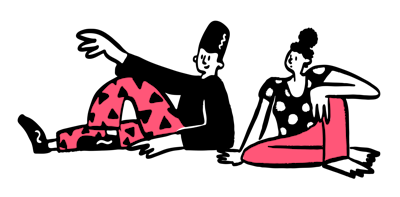

Welcome to the IFTR Volunteer Simulator

Welcome to your first day as a volunteer at IFTR 2025. What do you want to do first?
As part of my media project, I wanted to explore an interactive and playful format to reflect on the often invisible labor behind academic conferences. A game allows players to experience some of the pressures, choices, and personalities that shape volunteer work in such settings. By blending humor and relatable scenarios, I hope to both entertain and provoke thought about the value of behind-the-scenes contributions.
The illustrations used on this website are provided by Blush, used under their license terms.
The sound effects are sourced from Pixabay, used under Creative Commons licensing.
The website is hosted using Netlify.
This website is a project created by a student for educational purposes only. No commercial intent or professional services are offered.
Person responsible according to § 5 TMG: Lilli Fischer
c/o: Institut für Medienkultur und Theater
Meister-Ekkehart-Straße 11
50937 Köln
Contact: lfisch49@smail.uni-koeln.de